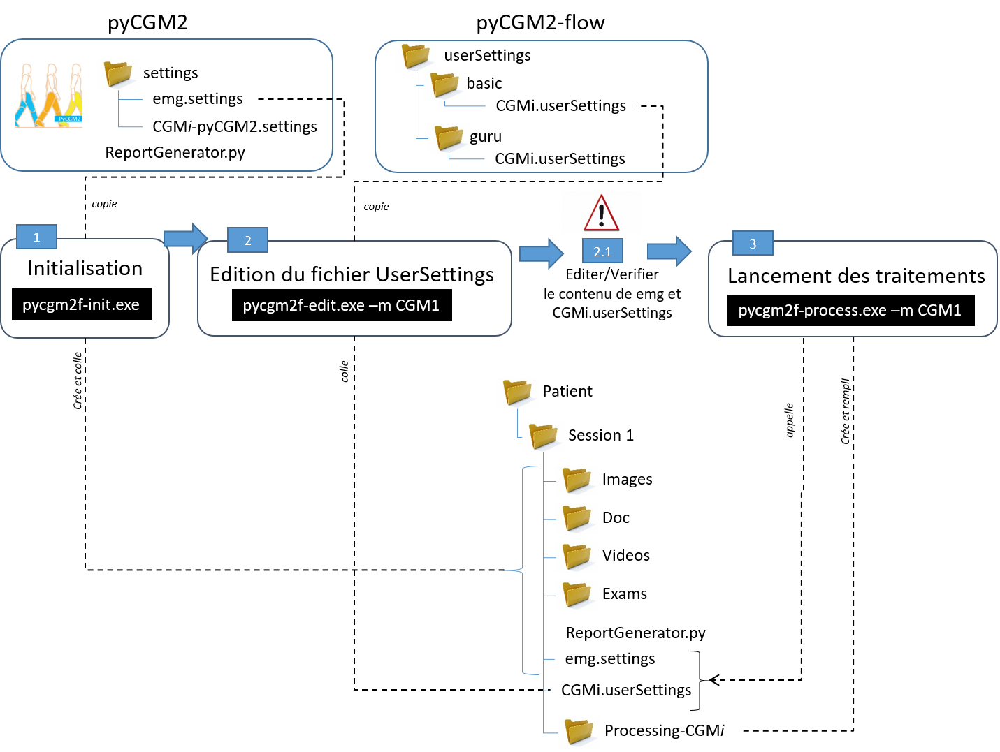

Version Francaise¶
Contents
Flow est une extension de pyCGM2 permettant de travailler avec les differents Conventional Gait models à partir d’UN fichier de configuration.
Un objectif secondaire de flow est d’avoir une meilleure visibilité et donc un meilleur suivi du traitement numerique effectué sur les données de marche.
Installation¶
Voici la procedure d installation complete de flow, intégrant l installation de python et du package pyCGM2.
Warning
Pour ne pas venir modifier votre eventuelle installation python. Je recommande fortement de travailler a partir d’environnement virtuel
Installation de python¶
- installer miniconda [Python3 64bit](https://www.anaconda.com/distribution/).
Pycgm2 et flow sont uniquement compatible en python 2.7 32bits. Il va donc falloir configurer l’environnement virtuel en fonction
- ouvrir la console anaconda prompt et taper:
set CONDA_FORCE_32BIT=1
conda create --nname pycgm2 python=2.7
activate pycgm2
set CONDA_FORCE_32BIT=
L’environnement virtuel pycgm2 est desormais activé.
Note
A chaque ouverture de la console anaconda, il faudra retaper
activate pycgm2
pour activer l environnement pycgm2
Installer pyCGM2¶
- cloner la branche [developpment](https://github.com/pyCGM2/pyCGM2/tree/development) de pyCGM2 avec un logiciel de gestion de version ( github desktop, sourcetree…)
- ouvrir une console conda prompt
- activer l environnement virtuel pycgm2
- se rendre dans le repertoire local ou les code du package pycgm2 ont été deposés.
- taper la commande
python setup.py develop
Installer pyCGM2-flow¶
La demarche est identique mais pointe sur le depot github: flow
- cloner la branche [master](https://github.com/pyCGM2/flow) de pyCGM2-flow avec un logiciel de gestion de version ( github desktop, sourcetree…)
- ouvrir une console conda prompt
- activer l environnement virtuel pycgm2
- se rendre dans le repertoire local ou les codes du package pycgm2-flow ont été deposés.
- taper la commande
python setup.py develop
Note
L’argument develop permet de travailler directement sur les depots locaux de pyCGM2 et flow. Cela permet d’etre au plus pres des developpements effectués sur les 2 packages sans avoir a re-telecharger le package.
Le worklow¶
Cette image decrit le flux de traitement des données. Il faut noter pour chaque étape : l’appel a de commande executable (.exe) ainsi que la manipulation des fichiers settings de pycgm2 et flow
Le detail de chaque etape va etre developé dans les parties ci-dessous.
Les fichiers settings¶
Le fichier CGMi.userSettings ( i pour 1,11, 21,…25) est le fichier de configuration principal. Il est important de bien le maitriser ( voir User Settings) .
userSettings appartient au package flow. Il se coordonne avec 2 autres settings appartenant a pycgm2:
- emg.settings : dans lequel est defini la configuration des voies emg
- CGMi-pyCGM2.settings : dans lequel est regroupé l ensemble des parametres par defaut des modeles de marche. Il s agit ici de settings EXPERT
Pour plus de renseignements sur ces 2 settings, voir la documentation de pyCGM2.
Usage¶
Dans un premier temps :
- ouvrez une console anaconda prompt
- activer l environnement pyCGM2
- placer vous a l endroit ou se trouve les données ( fichier c3d) de la session de marche a traiter
Conformement au workflow precedent, le traitement va s effectuer en 3 étapes
Etape 1 : Initialisation¶
Cette etape prépare le dossier de données.
Dans la console, taper :
pycgm2f-init.exe
Des repertoires (Images, Videos…) seront crées pour reunir des fichiers exterieurs. Cette commande copie-colle le fichier emg.setting e dans le dosier de données.
Note
quelques mots sur le script python “reportgenerator.py” copié dans le repertoire de données. Ce script est Experimental et vise a generer un rapport au format word. Il doit etre editer et lancer a la suite de l’etape 3 Ce script s’appuie sur les fonctions de haut niveau appartenant au repertoire Lib de pyCGM2. Il vient manipuler les fichiers * -pyCGM2.analysis et construire les panels de courbe
Pour plus d info, sur les differents arguments d entrée, voir le detail de la commande Init Command
Etape 2 : Edition du fichier userSettings¶
Cette etape doit mener a l’edition du fichier userSettings.
Dans la console, taper :
pycgm2f-edit.exe -m CGM1
Cette commande a comme argument d’entrée (‘-m’) le modele (ici CGM1). Cette commande copie-colle le fichier CGM1.userSettings dans le repertoire de données.
Warning
ATTENTION : Vous devez maitenant EDITER les fichiers *userSettings* et *emg.settings* collés dans la session avec votre editeur de texte
Pour verifier que vous respecter la syntaxe yaml, utiliser l’outil en ligne yamlLint.
Pour plus d info, sur les differents arguments d entrée, voir le detail de la commande Edit Command
Etape 3 : lancement des traitements¶
Cette etape lance le traitement.
Dans la console, taper :
pycgm2f-process.exe -m CGM1
Cette commande a comme argument d’entrée (‘-m’) le modele (ici CGM1). Cette commande va utiliser les informations contenues dans userSettings. Elle va créer un repertoire (ici Processing-CGM1) dans le dossier de données ou les fichier de sortie du traitement seront entreposés
Pour plus d info, sur les differents arguments d entrée, voir le detail de la commande Process command
Warning
Les acquisitions (c3d) doivent contenir les evenements du cycle de marche. Il n’y a pas d’algorithme de detection dans la commande traitement.
Dans le repertoire de sortie Processing-CGM1, on trouvera pour chaque condition stipulée dans userSettings:
- cleConditionID -advanced.xls : fichier excel regroupant l’ensemble des données cinematique/dynamique/emg traité.
- cleConditionID -Benedetti-dataframe.xls : fichier excel regroupant les valeurs numeriques des parametres recommandées dans l’article de Benedetti et al (1998) .
- cleConditionID -EMG-dataframe.xls : fichier excel regroupant les valeurs numeriques des integrations du signal EMG sur les differentes phases du cycle de marche .
- cleConditionID -pyCGM2.analysis : sauvegarde de l instance “analysis” construite par pyCGM2 pour la condition donnée. C est ce fichier qui est appelé dans mon script ReportGenerator.py pour construire le rapport. (Pour les utilisateurs Matlab, c est un sorte de fichier mat)
- AQM-exam.info : fichier au format json reunissant Données et les userSettings.
Recapitulatif - exemple¶
Voici un exemple de traitement de données avec le CGM23.
Considerons les données stockées dans ‘c:\mes données\Hannibal Lecter\Session 1’. Toutes les c3d ont été labelisés et les evenements du cycle de marche identifiés.
Le traitement s’effectuera de la maniere suivante:
- ouvrir anaconda prompt puis taper:
activate pycgm2
cd c:\\mes données\\Hannibal Lecter\\Session 1
pycgm2f-init.exe
pycgm2f-edit.exe -m CGM23
- Editer le contenu de CGM23.userSettings et emg.settings puis taper :
pycgm2f-process.exe -m CGM23 -p
Je rajoute ici l’argument “-p” afin de pouvoir visualiser les tracés (voir Process command)
Usage avancée¶
L usage avancée est utile lorsque les spécicités de votre examen sont differentes des celles attendues pour les CGMi. Un exemple concret est typiquement l emploi de noms de marqueurs differents (Left-ASI a la place de LASI). Il peut aussi s’agir de modifier le comportemnt standard du CGM, par exemple :
- en desactivant l’optimisation cinematique inverse pour les CGM 2.2+
- en forcant les positions de centre articulaire de hanche ( valable pour les CGM2i )
- en changeant le referentiel de projection des moments articulaires
Toutes ses informations sont possibles et peuvent s effectuer en modifiant les fichiers de settings expert CGMi-pyCGM2.settings appartenant au package pycgm2
Ainsi à l étape Init, il faudra preciser que vous souhaitez importer les settings expert dans le repertoire de données. Il faudra donc taper, pour le CGM23 par exemple :
pycgm2f-init.exe --expert -m CGM2_3
Le fichier CGM23-pyCGM2.settings sera importé et vous pourrez le modifier à votre guise.
Vous pouvez ensuite poursivre les etapes de traitement en tapant :
pycgm2f-edit.exe -m CGM23
pycgm2f-process.exe -m CGM23
Lors de l étape process, le fichier expert sera automatiquement detecté. Dans le cas ou vous souhaitez utiliser un fichier expert renommé, alors il faudra forcer son utilisation en tapant
pycgm2f-process.exe -m CGM23 --expert "monFichierExpert-pycgm2.settings"
Warning
Si vous souaitez rendre permanente vos modifications du fichier expert, alors il faut modifier directement les fichier CGMi-pyCGM2.settings appartenant au repertoire settings de pycgm2. Vous n ‘aurez plus a initialiser le traitement (pycgm2f-init.exe) en appelant l argument (“–expert”)